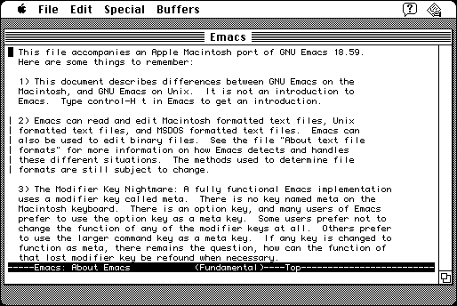

Download
Emacs-1.17.zip (1.8M) GNU Emacs Macintosh Port 1.17, based on Emacs 18.59, repackaged into a zipped hfs disk image and checksum file. The disk image can be mounted with Mini vMac.
Emacs-1.17.sit.bin (2M) GNU Emacs Macintosh Port 1.17 in the original format.Emacs-online-info.zip (401K) Emacs online documentation, repackaged into a zipped hfs disk image and checksum file. The disk image can be mounted with Mini vMac.
Emacs-online-info.sea.bin (438K) Emacs online documentation in the original format.
copyright: Free Software Foundation, Inc., port by Marc Parmet
mod date: May 17, 1995
license: GPL
last known url
(gone)
Macintosh port of a popular unix editor, not very Mac like. requires system 7.

Download source code
Emacs-1.17-sources.zip (1M) GNU Emacs Macintosh Port 1.17 Source repackaged into a zipped hfs disk image and checksum file. The disk image can be mounted with Mini vMac.
Emacs-1.17-sources.sit.bin (1.2M) GNU Emacs Macintosh Port 1.17 Source in the original format.
If you find these downloads useful, please consider helping the Gryphel Project, which hosts them.
Here are the md5 checksums for the downloads, signed with Gryphel Key 5:
--------- GRY SIGNED TEXT --------- ed1f8c022d3be66bce9e091be967e1a7 Emacs-1.17.zip 879d11b4cbff11052af70bd568cd8921 Emacs-1.17.sit.bin f7a5a6845662340659465a1d9e155852 Emacs-online-info.zip 526e8de177dd15313ffc560c9b514482 Emacs-online-info.sea.bin 59c2daa1e0f7c6aa375fdde29d6ecdcb Emacs-1.17-sources.zip ebfb14da18142006f18a8fa7aa8e41e0 Emacs-1.17-sources.sit.bin ------- BEGIN GRY SIGNATURE ------- Gry/4Xa8CFcUzxdN/AeZGOGRIVl6XBicGjA11VI1pdF9/SGtUw6y398dgqkNN9rT ubTDYiz0x3DuID6Oa/edtCok6zspDfxX4HjQ8DlT4cWwp1aLIE8gDohNbMxM8lLV gludV+hki2t8qrCwdnS3VKsVCSXYs3sW3mDLka/JZYAm1eOyLtu0rnT3WRNkY1dy -------- END GRY SIGNATURE --------